Features
Page Manager
How to add a page
- Open the builder page.
- Press "Open page manager", which will appear on hovering over the breadcrumbs to the right of Novi logo.
- Press "Add new page" on the appeared panel.
- Enter the page name and press "Create page".
To save changes done to the project, you need to press the "Save changes" button, located in the upper right part of the interface.
How to switch a page
Novi interface:
- Open the builder page.
- Press "Open page manager", which will appear on hovering over the breadcrumbs to the right of Novi logo.
- Select the proper page by pressing LMB on the appeared panel.
How to delete a page
- Open the builder page.
- Press "Open page manager", which will appear on hovering over the breadcrumbs to the right of Novi logo.
- Press "Delete" on the appeared panel.
To save changes done to the project, you need to press the "Save changes" button, located in the upper right part of the interface.
How to duplicate a page
- Open the builder page.
- Press "Open page manager", which will appear on hovering over the breadcrumbs to the right of Novi logo.
- Press "Duplicate" on the appeared panel.
To save changes done to the project, you need to press the "Save changes" button, located in the upper right part of the interface.
How to add the page preview
- Open the builder page.
- Press "Open page manager", which will appear on hovering over the breadcrumbs to the right of Novi logo.
- Press "Upload preview" on the appeared panel.
- Choose a necessary file from media library and upload a new file. You can find out more about all media library features in the "Media Library" section.
- Press "Insert Image"
To save changes done to the project, you need to press the "Save changes" button, located in the upper right part of the interface.
Page Settings
Page settings will be applied only to the page, opened in the visual editor at the moment.
- Trigger for the current page settings display
- Page name - page title
- File name – HTML-file name of the page (automatically generated from the page title)
- Use as home page - set the current page as ‘front’ one
- Favicon - and option to upload the favicon of the website
- Page’s metadata
* When saving settings (in case the page name was modified), all URL links of the project will be replaced with the "File name" value (including presets).
* The "Save Changes" button may be unavailable if the "File name" field is filled incorrectly (e.g. an invalid HTML-file name or a duplicate of an existing file name)
{kind=link}
Press the "Save changes" button after you’re done with the settings. Then save the project by pressing the "Save project" button.
Design Mode
This mode is mainly intended for developers. It provides you with the following options:
- Configure the builder’s plugins
- Edit the source code of the page (HTML, CSS, JS) with the help of the code editor tool
- Manage the project’s presets
- Manage the page’s content using the visual editor
Edit Mode
This mode is mainly intended for the end-users. It allows you to use all the visual tools for the content editing, including the builder’s plugins. "Edit Mode" is the one that loads by default.
Preview Mode
This mode allows to preview your website.
Configuration (Layer tool)
You can access project settings by clicking "Configuration" entry in the main menu of builder's interface.
- Categories of project settings.
- Categories of system settings.
- Area of specifying settings for a selected category.
{kind=link}
Project settings include the following:
- "General", including:
- Project Name – the name of the project.
- Image directory path – the path to the directory with project images.
- Video directory path - the path to the directory with project video files.
- Font directory path - the path to the directory with project fonts.
- Style directory path - the path to the directory with styles.
- "Publish", which allows changing the publishing path on your server where the builder is located. It also provides an option for enabling/disabling the confirmation of the path before publishing.
- "Google fonts" allows configuring Google fonts in your project. Please note that this setting is used in Novi's text editor. Here is how it works:
{kind=link}
- "File and Code Templates" allow you to change the basic markup of a new page as well as page container.
- "Project Layers" includes layer system settings.
In system settings, the "General" tab includes:
- Show tips on startup - indicates if it is necessary to display the initial presentation when at builder's startup.
- Check for Updates - indicates if it is required to check builder's updates (available since version 0.8.3).
- Language - a selector for choosing the builder's interface language.
Layer creating rules
To detect the user's interaction with the project layout elements, Novi uses the layer system. A layer is a rule, which defines the logical group of layout elements for manipulations in the visual editor (dragging, pasting, deleting, duplicating, transporting, and others).You can also manipulate any page elements disregarding layers as described in “Extending the features of working with elements”.
How to add/change a layer
To add a layer, you need to:
- Open the builder page.
- Open the main menu (press the Novi Builder logo icon) located in the upper left corner of the interface.
- Select "Configuration".
- In the "Project Layers" section, press "+" in the bottom of the table.
- Fill in the fields according to the "Rules of creating layers" section.
- Press "Save changes".
To save changes done to the project, you need to press the "Save changes" button, located in the upper right part of the interface.
Rules of creating layers
When creating layers, you need to enter the following parameters:
- Name – a name, which will be displayed on hovering over an element in the visual editor.
- Element – a CSS selector that defines the logical group, to which this rule applies.
- Can be inserted to – a CSS selector determining an area of manipulations with the logical group.
Example of layer usage
Let's take as an example an empty project without any layers. After entering the "Edit mode", you don't have the ability to interact with layout elements, and you need to add a layer.
Create a layer according to the paragraph "How to add or change a layer" with the following parameters:
- Name - Section
- Element - .section
- Can be inserted to - body
Thus, a layer called "Section" is created, which will contain all elements of HTML layout with .section class. All manipulations (dragging, adding etc.) will be happening in the context of its parent -
.After saving the layer in "Edit mode" (when elements with .section class are present on the target page), and while hovering over the layout element, which corresponds to the created layer, for example:
<section class="section"> ... </section>
an editor panel will be shown with options of dragging, duplicating, and deleting.
The area of dragging, in this case, will be limited to the "body" tag listed in the parameters of Section layer, i.e. you will not be able to move an element with .section class outside the borders of
, for example toExtending the features of working with elements
Novi uses the layer system for visual editing of elements.
If you need to edit elements that are not described in the layer system, you can use Ctrl button in Windows OS or Cmd in Mac OS.
When this key is pressed, you get access to all elements of the current page. Let us consider the following example:
{kind=link}
Here we need to place a button before the text.
If “Design Mode” is enabled, then:
- Press and hold Ctrl on Windows OS or Cmd on Mac OS
- Select the button by clicking LMB
- Click and hold LMB on the appeared panel
{kind=link}
Extending the features of working with elements
{kind=link}
{kind=link}
Placing an element before the text area
{kind=link}
Release LMB and Ctrl on Windows OS or Cmd on Mac OS.
Please pay your attention! This method allows you to manipulate any layout elements. Follow the rules of HTML code validity and semanticity.
Presets tool
A preset is a separate independent part of an HTML page. Actually, it is a set of HTML tags with its own structure, CSS classes, and nesting. Any part of HTML page may act as a preset but for the convenience, it is better to store independent components of a page in presets, for example, a banner, a section, a form, a column, a sidebar etc. You can learn more about working with presets in this section below.
Before starting to work with presets, we recommend you to read the section "Rules of creating layers".
Presets panel includes the following items:
- Developer’s panel
- ‘Create a preset’ option
- Existing presets list
- Presets categories and a search bar
{kind=link}
How to create a preset
There are 2 ways of creating a preset:
- Create a preset using the preset panel
- Use the context menu of visual editor
In the first case you need to:
- Open the builder page.
- Go to the "Design Mode" by pressing a proper button in the middle of the upper panel.
- Open the bottom panel by pressing "Presets".
- On the appeared panel, press "Add new preset".
- Fill in the fields as shown in the paragraph "How to correctly set the parameters when creating a preset" of this section.
- Press "Save preset".
In the second case:
- Open the builder page.
- Go to the "Design Mode" by pressing a proper button in the middle of the upper panel.
- Select the necessary area.
- Open the context menu by pressing RMB.
- Choose "Save as preset".
- Fill in the fields as shown in the paragraph "How to correctly set the parameters when creating a preset" of this section.
- Press "Save preset".
In the first case, you need to set the preset layout. In the second case, the layout will be taken from the element you selected in the "HTML Code" text field.
How to correctly set the parameters when creating a preset
In the "Preset name" field, specify the preset name.[#br] You also need to specify keywords in the "Keywords" field that allows finding the proper preset. We recommend you to state the preset keys relying on the content written in them. For example, the section with our clients will have the key named "Clients" or "Partners".
The text area "HTML Code" displays the HTML code, which will be inserted into the selected page after the preset is applied.
Checkbox "Deploy on preset insertion" defines whether the page will be reloaded when the preset is inserted.
How to add a preset preview
- Open the builder page.
- Go to the "Design Mode" by pressing a proper button in the middle of the upper panel.
- Open the bottom panel by pressing "Presets".
- On the appeared panel, select "Upload preview" from the context menu of the target preset.
- Choose a necessary file from media library and upload a new file. You can find out more about all media library features in the "Media Library" section.
- Press "Insert Image"
How to edit a preset
- Open the builder page.
- Go to the "Design Mode" by pressing a proper button in the middle of the upper panel.
- Open the bottom panel by pressing "Presets".
- On the appeared panel, select "Edit" from the context menu of the target preset.
How to duplicate a preset
- Open the builder page
- Go to the "Design Mode" by pressing a proper button in the middle of the upper panel.
- Open the bottom panel by pressing "Presets".
- On the appeared panel, select "Duplicate" from the context menu of the target preset.
How to delete a preset
- Open the builder page
- Go to the "Design Mode" by pressing a proper button in the middle of the upper panel.
- Open the bottom panel by pressing "Presets".
- On the appeared panel, select "Delete" from the context menu of the target preset.
Adding the preset to the page
There are 2 ways to add a preset to the page:
- With the help of the preset panel.
- Using the preset insertion module.
In the first case you need to:
- Open the builder page
- Go to the "Design Mode" by pressing a proper button in the middle of the upper panel.
- Open the bottom panel by pressing "Presets".
- On the appeared panel, find the necessary preset.
- Drag the preset into the visual editor area by holding LMB, therewith the area of insertion will be highlighted by a solid blue line.
- In the second case:
- Open the builder page
- Go to the "Edit Mode" by pressing a proper button in the middle of the upper panel.
- Hover over the area where you need to add the preset.
- If the preset is present and if it meets the layer rules, "+" will be displayed, press it.
- Select a necessary preset in the appeared dialogue window.
Content Editor (basic tools)
You can use the page editing tools only on the items located on the visual editor working area (see the "Overview" section). Access to the items in the visual editor area is defined at the project’s layers system settings (see the "Configuration" section).
The basic content editing operations available at the visual editor are the following:
- Removing
- Pasting from a preset
- Duplicating
- Replacing
All of these options are available on the item hover - just place the mouse cursor on the item in the visual editor.
Removing the content
Hover the target item in order to delete some of the page’s content and press the "Remove layer" button.
.gif)
Pasting the content from a preset
Hover the target area in order to add some content from a preset. In case there is a preset, matching the layers adding rules requirements (listed in the "Configuration" section), you’ll see the ‘+’ icon. Press it and choose the preset among the list of the available ones.
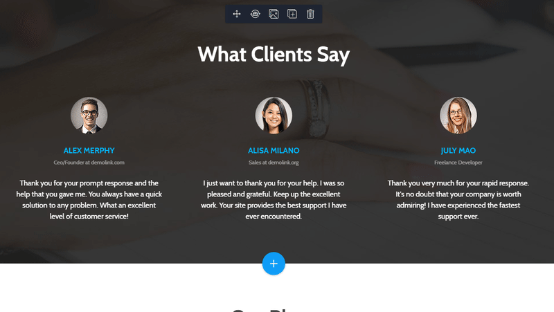{kind=link}
Duplicating the content
Hover the target item in order to duplicate some of the page’s content and press the "Duplicate layer" button.
.gif)
Replacing the content
Hover the target area in order to replace some of the page’s content. In case there is a preset, matching the layers adding rules requirements (listed in the "Configuration" section), you’ll see the ‘Replace layer’ icon. Press it and choose the preset among the list of the available ones.
.gif)
Drag & Drop tool
Drag & Drop Tool allows you to re-arrange the items within the visual editor area.
The items dragging rules are described in the Novi layers system in the "Configuration" section, the dragging area is specified at the Configuration under the ‘Page Container’.
First, you should hover the target item within the visual editor area, click on the "Move Layer" and then drag the item to any visual editor area keeping the left mouse button pressed.
The areas, available for dragging will be pointed up with the solid blue border line.
.gif)
Text Editor
Text editor allows you to edit the text within the visual editor area.
It has the following features:
- make text bold
- make text italic
- make text underlined
- change text alignment
- change text case
- add a link to the text
- change text color
- change font size
- change vertical spacing
- change text font
- change the line height
- change the letter spacing
When a feature cannot be applied to a certain text fragment (e.g. text alignment), a corresponding icon of the editor will be disabled (displayed in a dark color).
.gif)
Code Editor
Novi code editor is available in the design mode only.
You may find the list of its features below:
- Enables the source code editing (HTML, CSS and JS)
- Is fully compatible with Emmet
- Includes the HTML, CSS validation by default
- Applies your edits right away when the "Autodeploy" is enabled
- Provides an option to switch between all the HTML, CSS, JS files used on the target page
- Highlights the source code of the items in the code editor when you press on them with the left mouse button in the visual editor for the intuitive navigation on the HTML code.
Context menu
Context menu allows you to manage the items in the visual editor.
A set of the operations performed with the help of the context menu depends on the current Novi mode.
Context menu in the "Edit mode"
Context menu in the "Edit mode" allows you to do the following:
- Cut an item
- Copy an item
- Paste before, within or after the selected item
- Remove an item
- Duplicate an item
- Check the source code of the item
In order to cut the item you should hover it with the mouse cursor, click on it with the right mouse button and choose the "Cut" operation in the context menu.
In order to copy the item you should hover it with the mouse cursor, click on it with the right mouse button and choose the "Copy" operation in the context menu.
In order to paste the item that was previously cut or copied you should hover the target area with the mouse cursor, click on it with the right mouse button and choose the "Paste" operation in the context menu. You’ll also need to specify the place to insert the item.
In order to remove the item you should hover it with the mouse cursor, click on it with the right mouse button and choose the "Delete" operation in the context menu.
In order to clone the item you should hover it with the mouse cursor, click on it with the right mouse button and choose the "Duplicate" operation in the context menu.
In order to check the source code of the item you should hover it with the mouse cursor, click on it with the right mouse button and choose the "Source Code" operation in the context menu. Builder will switch to the Design mode and the item’s source code will be highlighted in the code editor.
Below you may find an example of using the visual editor context menu:
.gif)
Context menu in the "Design mode"
The context menu of the Novi "Design mode" is an extended version of the one, available in the "Edit mode".
The additional options are the following:
- Select the parent item
- Save the item as a preset
Below you may find an example of using the visual editor context menu in the Design mode:
.gif)
Media library
Media library contains all the graphic files that are used in the template. It allows you to easily add and delete all graphic and video files of the project.
To access the media library use the main Novi Builder menu.
Media library looks the following way:
- category panel, 3 categories are reserved by Novi ("Show all", "Images Only", "Videos Only");
- custom project categories;
- button for adding custom categories;
- media panel;
- media upload panel;
- context menu of the media panel.
* Custom categories are those that were created by the user. Custom categories support the following functionality:
- changing category name;
- category media cleanup;
- category removal;
- adding media files to the category.
{kind=link}
How to add media files to the library
There are several ways of adding a file to the media library. In the first one you need to:
- open the main menu of the Novi Builder;
- choose "Media Library" item;
- press the "Upload Files" button;
- select a file, press the "Upload" button.
The second one is available only if an active media library category is empty. In this case, you can drag the files from your computer's file system to the media files panel shown on the image above. The whole panel will also offer an option of uploading files from the file system.
To save changes, use the "Save" button that resides in the right corner of the top bar.
*When you’re uploading a new file to the media gallery, it's added to the currently active category, except for the case of uploading a video file when the active category is "Images Only" and vice versa.

How to crop an image in media library
To crop an image in the media library, you should:
- open the media library;
- call the context menu of the target file by right-clicking the file;
- choose the "Crop Image" item;
- select the needed area;
- press the "Crop image" button.
{kind=link}
How to reduce an image in the media library
To reduce an image in the media library, you need to:
- open media library
- click RMB on the target file to open the context menu.
- select "Reduce Image".
- specify the required size using the scroll box or inputs.
- press "Apply". If you need to change a copy of the original image, set the check mark "Copy original image" in active state.
{kind=link}
How to delete files from the media library
To delete files from the media library you should:
- open the media library;
- choose the needed file(s) (the library supports multiple selection with Ctrl or Shift);
- call the context menu of the selected file(s) by pressing right mouse button;
- choose the "Delete file completely" item.
To save changes, use the "Save" button that resides in the right corner of the top bar.

How to add a media file to the category
To add a media file to the category, you should:
- open the media library;
- choose the necessary file(s) (media library supports multiple selection with Ctrl or Shift);
- press the right mouse button, drag file(s) to the target category name area.
To save changes, use the "Save" button that resides in the right corner of the top bar.

How to remove a media file from a category
To remove a media file from a category, you should:
- open the media library;
- select a custom category;
- select the needed file(s) (media library supports multiple selection with Ctrl or Shift);
- call the context menu of the selected file(s) by pressing right mouse button;
- choose the "Delete file from category" item for the target file(s).
To save changes, use the "Save" button that resides in the right corner of the top bar.
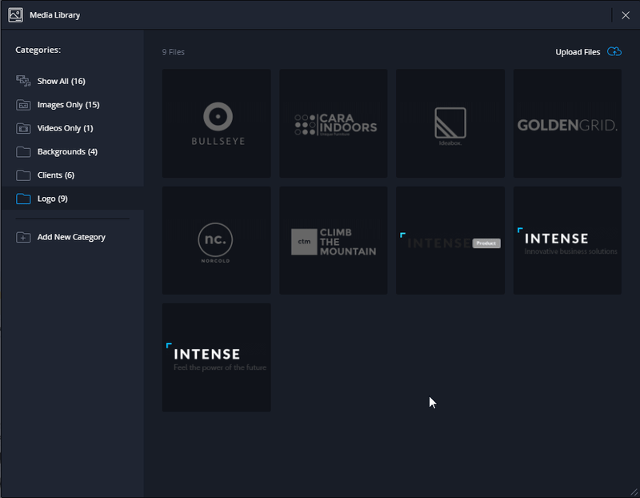{kind=link}
How to add a category to media library
To add a category to the library, you should:
- Open the media library;
- Press the "Add new Category" button.
To save changes, use the "Save" button that resides in the right corner of the top bar.
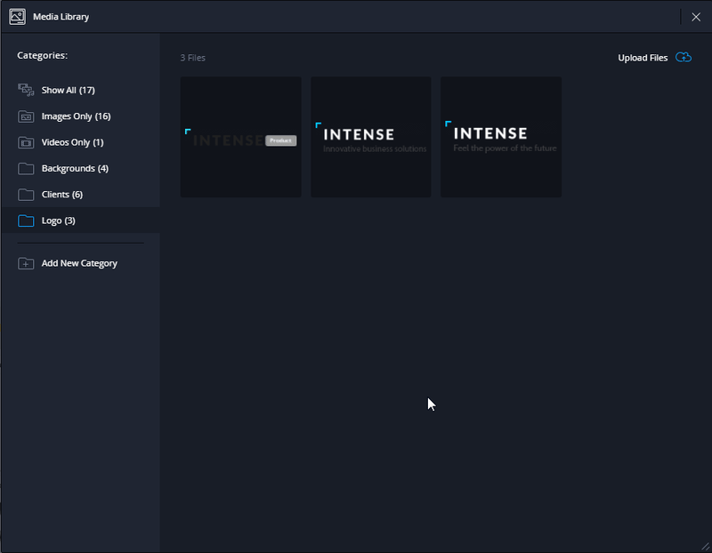{kind=link}
How to remove a category from media library
To remove a category from media library, you should:
- open the media library;
- select the needed custom category;
- call the context menu of the selected category by right-clicking it;
- select the "Delete category" item.
To save changes, use the "Save" button that resides in the right corner of the top bar.
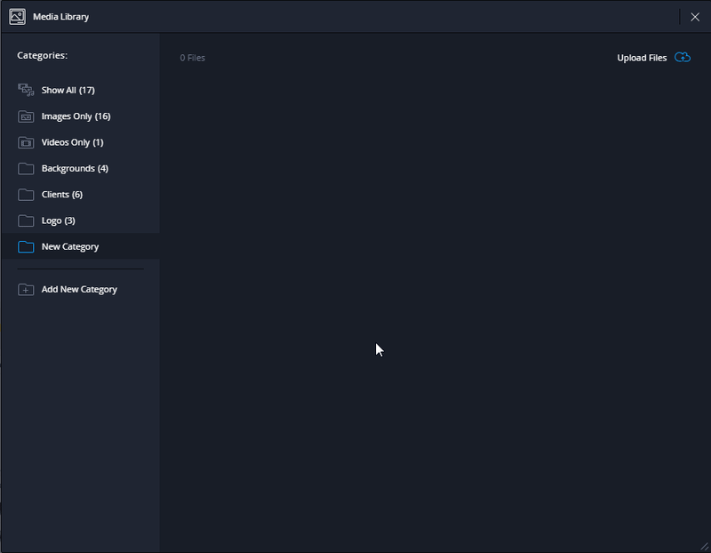{kind=link}
How to rename a category
To rename a category, you should:
- open the media library;
- select the needed custom category;
- call the context menu of the selected category by right-clicking or double-clicking the left mouse button on the category name;
- choose the "Rename category" item, enter the needed name, press Enter.
To save changes, use the "Save" button that resides in the right corner of the top bar.

How to delete media files from the category
To delete all media files from the category, you should:
- open the media library;
- select the needed custom category;
- call the context menu of the selected category by right-clicking it;
- choose the "Clear category" item.
To save changes, use the "Save" button that resides in the right corner of the top bar.
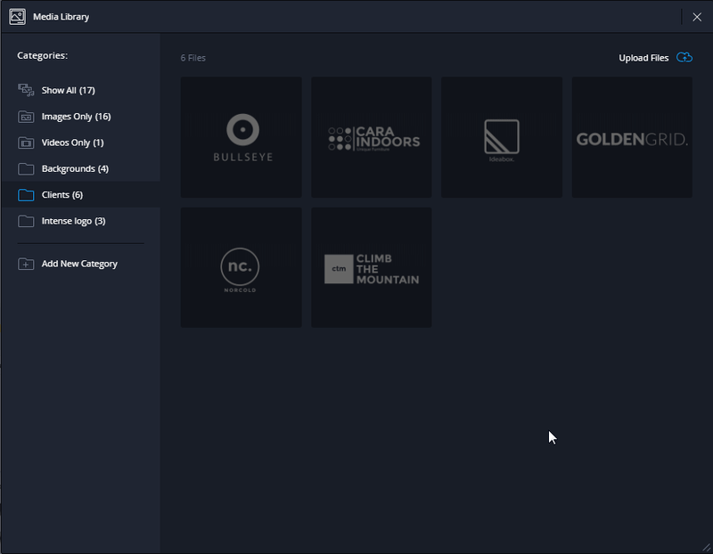{kind=link}
How to upload project files to the media gallery
To upload project files to the media gallery, you need to:
- open Media Library
- press "Upload project files" 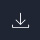
- in the opened modal window check the paths to project files and after that press "Import". If the paths are inappropriate, you need to click "Change directory path" and replace them with the correct ones in the corresponding fields "Image directory path:" and "Video directory path:"
To save changes, use the "Save" button that resides in the right corner of the top bar.
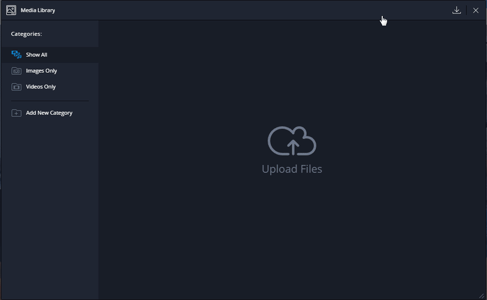{kind=link}
Icons manager
This tool provides you with an option to manage the project's iconic fonts. By default, the builder has 7 popular iconic fonts available for use:
- FontAwesome
- Material Design Icons
- Material Icons by Google
- Flat Icons Bigmug Line
- Flat Icons Budicons Launch
- Flat Icons Budicons Free
- GlyphIcons Halflings
Use the main Novi Builder menu to reach the icons manager.
Icons manager looks the following way:
- Select option to choose the font family (among the 7 basic font families, included by default).
- Search field to search within the selected font family.
- Output area of the selected iconic fonts.
- Button to upload the archive of a custom iconic font.
How to add a custom font to the builder project
In order to add a custom iconic font to the project, perform the following steps:
- Open the icons manager, it can be reached from the main builder menu.
- Click the "Upload icon Pack" button
- Browse your font archive. It should meet the requirements, listed in the "Creating an archive for an iconic font import" section.
- Import the font and save the changes by pressing the Save Project button in the top right corner of the main builder panel.
Creating an archive for an iconic font import
You should prepare the font archive to successfully import the font into the builder. It has to comply with the following rules:
- The archive should not include parent directories for the files.
- Incorrect:
- font-awesome.zip
- font-awesome
- font-awesome.css
- fonts
- FontAwesome.otf
- fontawesome-webfont.eot
- fontawesome-webfont.ttf
- font-awesome
- font-awesome.zip
- Correct:
- font-awesome.zip
- font-awesome.css
- FontAwesome.otf
- fontawesome-webfont.eot
- fontawesome-webfont.ttf
- font-awesome.zip
- Incorrect:
- The archive must have a CSS font file.
- The CSS font file has to contain a @font-face rule with all the references to font files and font-family property specified.
- The CSS font file has to contain a set of classes to define the icons.
Replacing the icon in a project
You should use the icons replacement plugin to change the icons within the project. The detailed description of the plugin is available at the Icons plugin section, under the Plugins.
Resolution Preview Tool
You can find the resizer tool at the main Novi interface. It can be used for previewing the visual editor on the different screen sizes.
Resizer has 7 different dimensions, by default the “Desktop Full-HD” is active. There are also the following dimensions available:
- Mobile Portrait 320x480 px
- Mobile Landscape 480x320 px
- Tablet Portrait 768x1024 px
- Tablet Landscape 1024x768 px
- Notebook 1280x720 px
- Desktop PC 1600x900 px
Keep in mind, the resizer shows your project on the different screen sizes, but it does not emulate the devices. Therefore, in certain cases the resulting display might differ on the real devices.
Export
Template Export
Template export in Novi Builder is available in the main menu of the interface, "Export", "Export Template" items.Export allows to save a ZIP-archive in a chosen place. The template structure will be fully preserved.
Project Export
Project export in Novi Builder is available from the main menu of the interface, "Export", "Export Project" items.Export allows to save a ZIP-archive in a chosen place. The project structure will be fully preserved.
Import
The feature of project and template import has been added to the builder.
When working with a big project (the size depends on your server's settings, post_max_size and upload_max_filesize parameters) or template, we recommend you to increase the values of post_max_size and upload_max_filesize parameters in the settings file of PHP.
Project Import
Preparing for project import
Before importing your project it is necessary to build a proper archive (if the archive is built by the builder during export, it fits all requirements written below).
Novi project has the following structure by default:
- template – a project folder
- .novi – a optional folder, contains media gallery files and page previews.
- bat – a folder with php scripts of the project
- css – a folder with project styles
- elements – an optional folder, which contains project presets
- fonts – a folder with project fonts
- images – a folder with project pictures
- js - JS code of the project
- index.html – HTML page of the project
- project.json – project configuration file
To import your project, you need to prepare a ZIP-archive, which will include all content of template directory.
Attention! The archive must not include any additional parent directories.
Incorrect:
- template.zip
- template
- .novi
- ...
- project.json
- template
Correct:
- template.zip
- .novi
- ...
- project.json
Attention! The archive's root folder must include at least one .html file and project.json file.
Those pages that are not located in the archive's root folder will be unavailable for editing in the builder.
Project Import
To import a project, open the main menu, select "Import", "Project Import".
Template Import
Preparing for template import
Before importing your template it is necessary to build a proper archive (if the archive is built by the builder during export, it fits all requirements written below).
- The archive must not include additional parent folders.
Incorrect:
- site.zip
- site
- images
- ...
- index.html
- site
Correct:
- site.zip
- images
- ...
- index.html
The archive's root folder must have at least one .html file, all pages that are not located in the root directory will be unavailable in the builder's page manager.
Will be unavailable:
- site.zip
- images
- css
- ...
- pages
- index.html
- ...
- contact.html
Will be available:
- site.zip
- images
- css
- ...
- index.html
- ...
- contact.html
Template Import
To import a template, open the main menu, select "Import", "Template Import".
Troubleshooting:
- After importing a project/template and restarting the builder, I am suggested to perform it again.
- You need to check the structure of you template/project for accordance with the requirements described in this section.
- In case of project import, you should validate the project configuration file, project.json
- During the archive upload process, a critical error occurs.
- We recommend to increase the value of post_max_size and upload_max_filesize parameters in php.ini
Publication
Project publication is available from the main panel of Novi interface and will be done according to the path you have specified in the project settings, "Publish path" item.
Publication can be currently carried out only within the server where Novi Builder is installed.
Be attentive! Repeated publication will update your website's content only if the "Publishment path" attribute in the Project Settings remains unchanged.
Before every publication you will be shown a confirmation window. You can disable this option in Project settings, Publish Settings item, "Disable confirmation before publishing."
Multilanguage
A feature of language change was added to Novi Builder. To use it, you need to:
- Open the main menu
- Choose "Configuration".
- In the "System" category choose "General".
- Select a necessary option in "Change current application language:" dropdown list.
You can also add a language for Novi interface.
How to Add a Language for Novi Interface
The Novi interface language data are presented in json format. All data for translation are stored in lang folder of Novi project.
To add a translation, you need to:
- Create a translation file "en.json", where en is the language identifier.
- Add a json object to languages.json file with the following data:
"en": { - language identifier
"file": "en.json" – a path to the file with translation data created at the previous step.
"name": "English" – language name that will be displayed in system settings during language selection.
}
Rules of filling the translation file ("en.json" file):
- All keys for translation have to be taken from blank.json file, which is included with given Novi Builder package (lang directory).
- You must not change key names or modify their nesting, otherwise your translation will not be displayed. в противном случае ваш перевод не будет отображен. For example, let's take a fragment of en.json file:
"editor": {
"replaceItem": {
"tooltip": "Your translation goes here"
}
}
If anything in this listing is changed except "Your translation goes here", your translation will not be displayed in the builder.
- Translation values also use shortcodes for displaying of dynamic or reserved information. Shortcode looks as follows:
"Go to #{errorLine} line", everything written between ", and " is the shortcode name.
You can change the shortcode sequence in the line but you must not change its name, otherwise dynamic information will not be displayed.
In case of incorrect filling or data skipping/deletion in the translation file, these data will be replaced with the translation from en.json file.
Style manager
Style Manager was added to Novi Builder in version 0.9.0. It allows editing the styles of your project.
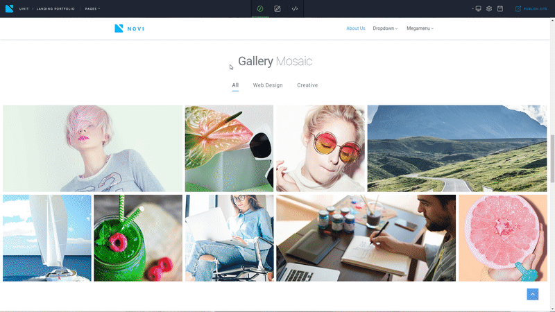{kind=link}
It is located in the developer panel and looks as follows:
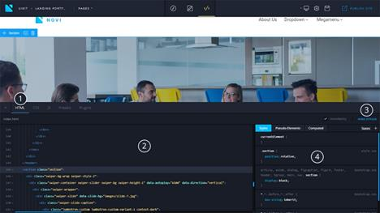{kind=link}
where:
- Tab on developer panel for showing HTML code and styles.
- Webpage HTML code
- Trigger for showing/hiding the style manager
- Style manager's panel
The panel of style manager can also be relatively divided into the following components:
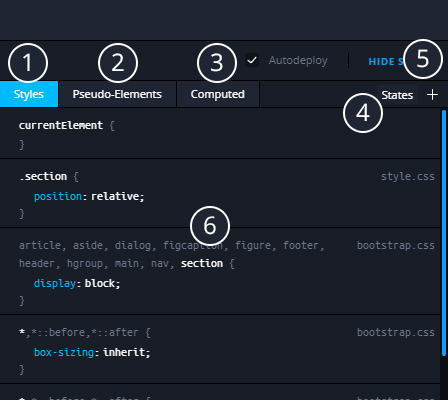{kind=link}
- Tab for showing styles that are applied to the current element. All of these styles are editable, be careful with editing global styles!
- Tab, which shows all styles applied to a pseudo-element of the selected element, e.g. :before, :after
- Tab displaying all styles including those inherited from their parents, added by the browser that are applied to the element.
- "States" toggle, which shows element's styles in states :hover, :focus, :active
- Button for adding a selector to the style manager of the chosen element.
- Area for displaying element styles according to the client's choice.
Principle of Style Manager operation
To begin your work with Style Manager, you need the basic knowledge of HTML and CSS.
Style Manager displays styles of a selected element so when you open Style Manager without selecting an element, it will be empty.
How to select an element to display its styles
There are 2 ways of selecting an element:
- Using the Visual Editor
- Using the editor of webpage HTML Code
In the first case, it is enough to press LMB on the target element in Visual Editor. If the element is not described in layers, use Ctrl + LMB to select it.
In the second case, you need to open the HTML code of the page using the context menu of Visual Editor and select "Source Code" or switch to Editing Mode and open HTML tab on the developer panel.
After this, you can select the tag you need with LMB. At the same time, the element in Visual Editor will be selected as well, and element styles will be displayed in Style Manager.
*If the selected tag will be located not in the page's container (you can find more about it in "Configuration" section), then the element will not be selected.
How to add/change the element styles using Style Manager
When editing styles with Style Manager, a new CSS file (novi.css) is created where all styles that you add are stored. Modified styles will be rewritten in current project files.
To begin, you need to select the desired element, read more about it in the previous paragraph.
Afterward, if you need to modify an existing style, just click LMB on a necessary property in Style tab or in Pseudo-Elements tab, and replace it with the one you need. All selectors, properties, and values are editable.
You need to be attentive when making changes in global element styles. Editing values and properties of the chosen selector will lead to changes of all elements that suit the chosen selector.
To add new styles to the element, you need to use the button "+" located in the top right corner of Style Manager.
It is important to know that when "Pseudo-Elements" is opened or :hover, :active states are selected, a corresponding selector will be added:
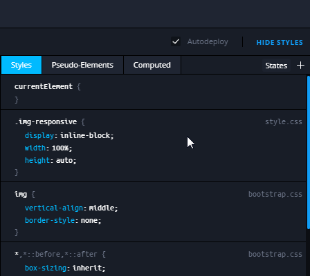{kind=link}
In case of adding a style with the state novi resizer (see more in "Resolution preview tool" paragraph), which differs from "Desktop Full HD", the CSS rule will be transformed into a corresponding media request.
* Visual Editor now also has a feature of setting the hover on any element. To do so, click RMB on the target element and open the context menu. After that, choose "Force 'hover' state". This feature is available in the Editing Mode. To view :hover state in the Design Mode, you need to use Style Manager, "States" button.
Updater
Builder updates are available starting from the v. 0.8.3.
By default Novi updates are disabled, you should tick the "Check for updates" item under the system settings in order to enable them.
If there is a newer version of the Novi Builder, you will see the dialog window after the loading of the builder. You’ll be able to update the builder by following its instructions.
The current project will remain unchanged after the update applied.
Hotkeys
There is a range of useful hotkeys in various Novi Builder modules.
Application
- Ctrl + S - Save the project
Visual Editor (Edit Mode)
- Ctrl + Enter - deselect the current element
- Esc - deselect the current element
Visual Editor (Design Mode)
- Alt + ~ - navigate to the parent container of the selected item
- Ctrl + X - cut the selected item
- Ctrl + C - copy the selected item
- Ctrl + Alt + V - paste before the selected item
- Ctrl + V - paste into the selected item
- Ctrl + Shift + V - paste after the selected item
- Delete - remove the item
- Ctrl + D - duplicate the selected item
- Ctrl + Q - save the selected item as a preset
Code Editor
- Ctrl + S - Save in the editor
- Ctrl + L - file formatting
- Ctrl + D - remove the entire line
- Ctrl + Shift + D - duplicate the entire line
- Ctrl + Z - undo the last change
- Ctrl + C - copy into the clipboard
- Ctrl + V - paste from the clipboard
- Alt + Down - shift the line down
- Alt + Up - shift the line up
- Alt + Delete - remove to the end of the line
- Alt + Backspace - remove to the start of the line
- Ctrl + A - select all
- Shift + Left - select one symbol to the left
- Shift + Right - select one symbol to the right
- Shift + Home - select to the start of the line
- Shift + End - select to the end of the line
- Ctrl + Shift + Home - select to the start of the file
- Ctrl + Shift + End - select to the end of the file
- Ctrl + LMB (left mouse button) - set multicursor
- Ctrl + Alt + Right - select the next reiteration setting of multicursor
- Ctrl + Alt + Left - select the previous reiteration setting of multicursor
- Ctrl + F - find
- Ctrl + H - replace
- Ctrl + K - find the next item
- Ctrl + Shift + K - find the previous item\